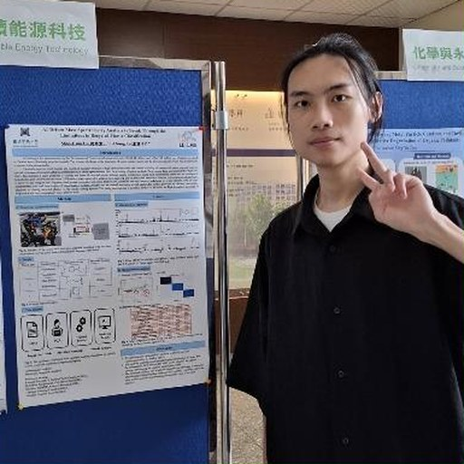

實驗室主持人

I-Chung Lu 盧臆中
副教授 · 化學系，國立中興大學
I-Chung Lu is an Associate Professor of Chemistry at National Chung Hsing University, Taiwan. He earned his B.S. and Ph.D. from National Tsing Hua University and was a postdoctoral researcher at the Institute of Atomic and Molecular Sciences, Academia Sinica, and at Wayne State University. His group develops mass spectrometric methods that connect fundamental physical chemistry with real-world analysis: mechanistic studies of MALDI ionization, AI-assisted carbohydrate profiling for clinical rapid screening, and customized MS inlet systems that capture reactive intermediates in transition-metal catalysis and electrochemical water oxidation. His work treats analytical science as an enabling technology for chemical discovery.
學歷
- Ph.D. in ChemistryNational Tsing Hua University, Taiwan · 2000–2007
- B.S. in ChemistryNational Tsing Hua University, Taiwan · 1993–1997
經歷
- Associate ProfessorDepartment of Chemistry, National Chung Hsing University · 2024–present
- Assistant ProfessorDepartment of Chemistry, National Chung Hsing University · 2018–2024
- Assistant ProfessorDepartment of Applied Chemistry, Providence University · 2017–2018
- Postdoctoral FellowDepartment of Chemistry, Wayne State University, USA · 2015–2016
- Postdoctoral FellowInstitute of Atomic and Molecular Sciences, Academia Sinica, Taiwan · 2012–2015
- R&D Chief EngineerAnalytical Instrument Division, CVC Technologies, Inc. · 2011–2012
- Postdoctoral FellowGenomics Research Center, Academia Sinica, Taiwan · 2008–2011
獲獎
- 國立中興大學優聘教師（115 學年度）2026
- 國立中興大學特優導師（112 學年度）2024
- 國立中興大學教學特優獎（110 學年度）2021
- 國科會（原國科會）獎助博士後研究人員2012
研究助理

碩士班學生


大學部學生


畢業校友
